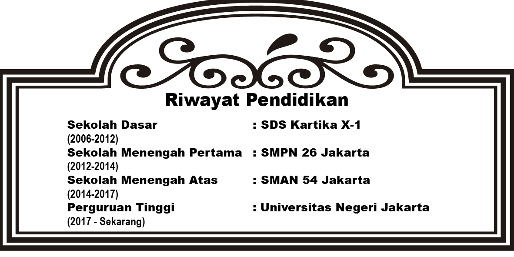

Deskripsi Singkat
Juan Carlos Sarwijang adalah seorang mahasiswa Universitas Negeri Jakarta program studi Teknologi Pendidikan. Sehari - hari menjalani perkuliahan seperti mahasiswa umumnnya tetapi pulang kuliah Juan mengikuti organisasi Keluarga Mahasiswa Hindu Buddha dan Himpunan Mahasiswa Buddhis Indonesia. Juan memiliki minat dalam dunia pendidikan semejak menduduki jenjang Sekolah Menegah Atas, Juan sering mengajar les adik - adik kelasnya dalam segala mata pelajaran yang Juan ketahui.
